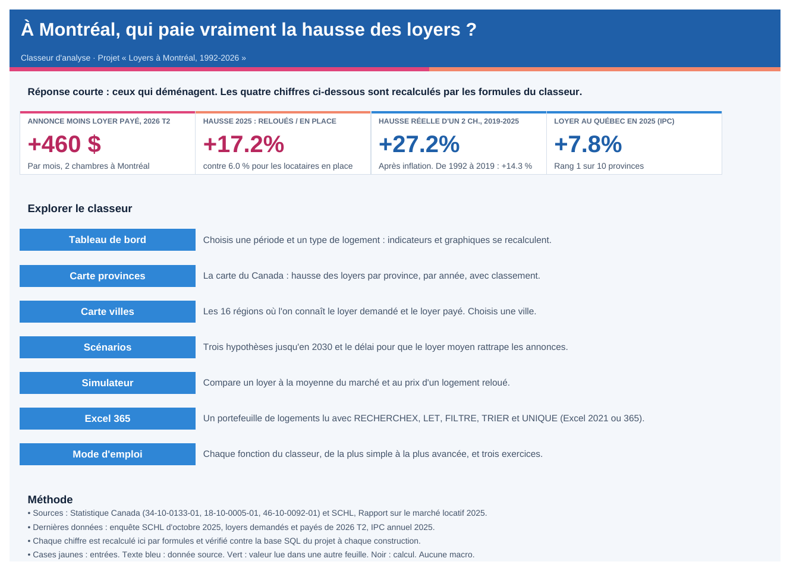
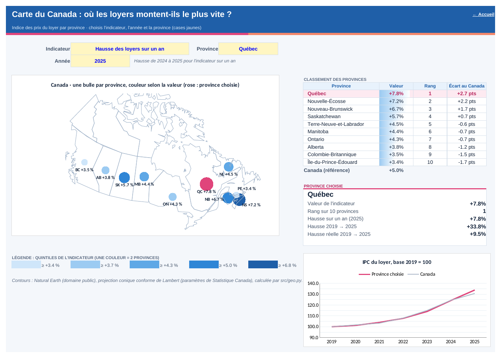
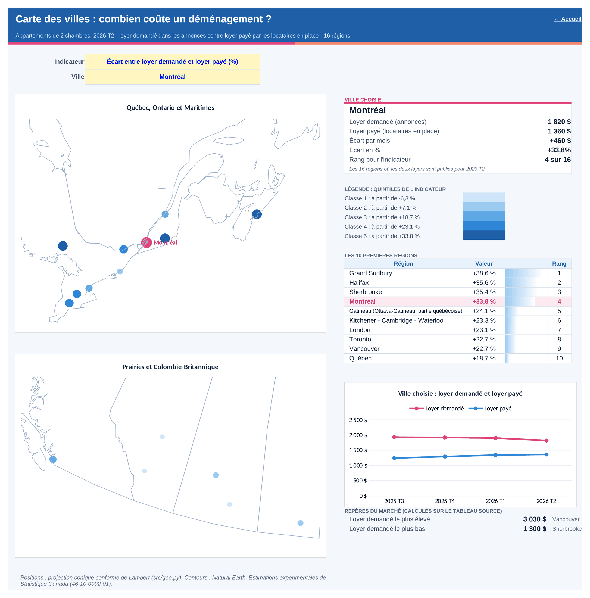
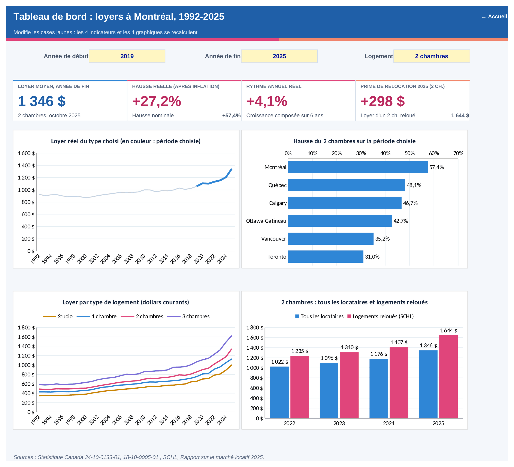
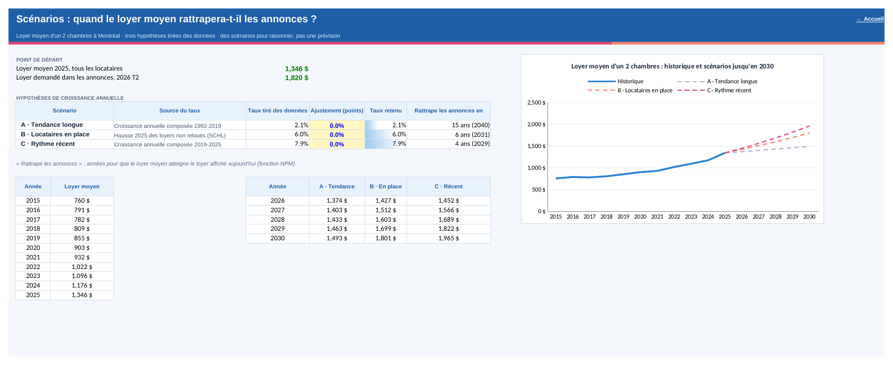
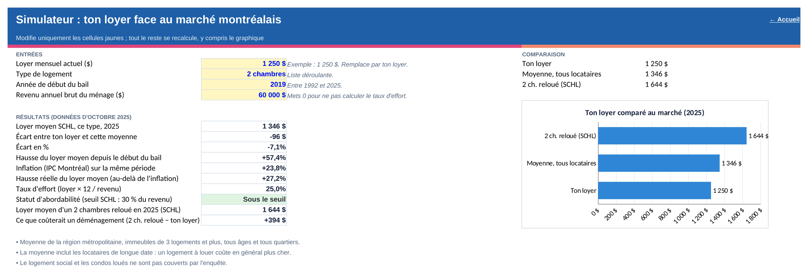

Compétence · Excel
Un classeur qui répond à la question, avec ses propres cartes
Huit feuilles — six d'analyse, une feuille « Excel 365 » et un mode d'emploi — plus cinq tableaux sources, 1 272 formules, aucune macro, aucune cellule vide. Le classeur existe en français et en anglais : mêmes formules, mêmes chiffres. Choisis une année : la carte du Canada se recolore. Choisis une ville : sa fiche, son rang et sa courbe suivent. Des fonctions simples (SOMME.SI.ENS, SI.CONDITIONS) portent l'essentiel ; les plus avancées (CENTILE, NPM, séries à NA()) font les cartes et les scénarios.
- SOMME.SI.ENS
- SI.CONDITIONS
- MAX.SI.ENS
- INDEX / EQUIV
- CENTILE
- NPM
- Plages nommées
- Validation des données
- Graphiques cartographiques
Feuille « Accueil »
La question et la réponse, dès l'ouverture
Le classeur s'ouvre sur la question du projet et quatre chiffres qui y répondent, tous recalculés par formules à partir des tableaux sources. Un bouton par feuille sert de menu. Les captures suivent la langue choisie : classeur français ici, classeur anglais en version anglaise de la page.

Feuille « Carte provinces »
La carte du Canada, en graphique Excel
Une carte faite avec un graphique Excel standard : les contours des provinces forment une série de lignes, chaque province est une bulle dont la couleur et la taille suivent sa valeur. Elle s'ouvre dans toutes les versions d'Excel, sans connexion et sans complément.

Des contours projetés
Un script du projet (geo.py) projette les contours des provinces (projection conique conforme de Lambert, paramètres de Statistique Canada) et les simplifie en 800 points.
Une valeur, une classe
CHOISIR prend l'indicateur choisi ; CENTILE découpe les 10 valeurs en quintiles ; EQUIV donne la classe de couleur de chaque province.
Cinq séries, une sélection
Une série par classe : une province n'a de coordonnée que dans sa classe, sinon NA(), qu'Excel ne trace pas. La province choisie a sa propre série, en rose.
La valeur selon l'indicateur choisi
=CHOOSE(MATCH(IndCarte,ListeIndProv,0),J82,K82,L82)
=PERCENTILE(ProvValeurs,0)
La série d'une classe de couleur
=IF(AND(P82=1,A82<>ProvSelCode),D82,NA())
Les étiquettes « QC +7,8 % » sont des séries dont le nom vient d'une cellule ; FIXE affiche la virgule de l'Excel de l'utilisateur.
=A82&" "&IF((M82)>=0,"+","")&FIXED((M82)*100,1)&" %"
Feuille « Carte villes »
Combien coûte un déménagement, ville par ville
Les 16 régions où Statistique Canada publie à la fois le loyer demandé et le loyer payé, sur deux cartes (Est et Ouest). Choisis une ville : son point passe en rose, sa fiche, son rang et sa courbe trimestrielle se mettent à jour.

=IF(AND(L112=1,A112<>VilleSelID),D112,NA())
Feuille « Tableau de bord »
Piloté par trois cellules
Année de début, année de fin et type de logement : trois plages nommées (Debut, Fin, TypeLog) protégées par une validation des données. Les quatre indicateurs et les quatre graphiques se recalculent.

Hausse réelle sur la période
Le rapport des loyers divisé par le rapport des indices de prix : l'inflation est retirée en une seule formule.
=(SUMIFS(Loyers_Montant,Loyers_Annee,Fin,Loyers_Type,TypeLog)/SUMIFS(Loyers_Montant,Loyers_Annee,Debut,Loyers_Type,TypeLog))/(INDEX(IPC_Valeur,MATCH(Fin,IPC_Annee,0))/INDEX(IPC_Valeur,MATCH(Debut,IPC_Annee,0)))-1
Tri des villes sans macro
RANG classe les hausses, puis INDEX/EQUIV reconstitue la liste triée qui alimente le graphique en barres.
=RANK(D42,$D$42:$D$47,0) =INDEX($A$42:$A$47,MATCH(1,$E$42:$E$47,0))
Les formules sont enregistrées en anglais dans le fichier ; une version française d'Excel les affiche traduites (SUMIFS devient SOMME.SI.ENS, IFS devient SI.CONDITIONS, PERCENTILE devient CENTILE).
Feuille « Scénarios »
Quand le loyer moyen rattrapera-t-il les annonces ?
Trois hypothèses de croissance tirées des données (tendance 1992-2019, hausse 2025 des locataires en place, rythme 2019-2025), ajustables. La fonction NPM calcule le nombre d'années pour que le loyer moyen (1 346 $) atteigne le loyer affiché aujourd'hui (1 820 $).

=IF(G11<=0,"jamais",ROUNDUP(NPER(G11,0,-$E$6,$E$7),0)&" ans ("&(2025+ROUNDUP(NPER(G11,0,-$E$6,$E$7),0))&")")
Feuille « Simulateur »
Ton loyer face au marché

Feuille « Excel 365 »
Un portefeuille de logements lu avec les fonctions dynamiques
La liste fictive d'une agence (huit logements) analysée avec RECHERCHEX, LET, FILTRE, TRIER et UNIQUE : loyer du marché pour chaque type, hausse du marché depuis le début du bail, position face au marché, gain d'une relocation au prix des annonces, puis les logements sous le marché classés par écart et le revenu annuel qu'une relocation libérerait. Les cases jaunes se modifient : la feuille recalcule le portefeuille. C'est la seule feuille qui demande Excel 2021 ou Microsoft 365.
RECHERCHEX à deux critères, dans un LET
=LET(debut,E7,marche_bail,XLOOKUP(1,(Loyers_Annee=debut)*(Loyers_Type=C7),Loyers_Montant),F7/marche_bail-1)
Le loyer du marché pour le type et l'année du bail, sans colonne d'aide : la recherche porte sur un produit de deux conditions. LET nomme les étapes.
FILTRE puis TRIER, en une formule
=IFERROR(INDEX(SORT(FILTER(CHOOSE({1,2,3,4},B7:B14,C7:C14,D7:D14,H7:H14),H7:H14<-0.05),4,1),1,1),"")
Les logements dont l'écart au marché dépasse −5 %, classés du plus grand écart au plus petit. Le revenu annuel libéré suit la même logique :
=LET(gains,FILTER(J7:J14,(C7:C14="2 chambres")*(H7:H14<-0.05)),IFERROR(SUM(gains)*12,0))
Chaque cellule des tableaux à résultat multiple lit sa ligne avec INDEX : les lignes sans résultat restent vides, et la feuille s'ouvre telle quelle dans Excel 2021 et Microsoft 365. Pas de capture pour cette feuille : l'outil de rendu du projet (LibreOffice) ne connaît pas encore ces fonctions, et je ne publie que des captures du vrai résultat.
Qualité du classeur
Vérifications
- Recalcul complet dans LibreOffice à chaque construction : aucune erreur visible. Les seuls NA() sont dans la feuille masquée « Calculs », où ils servent à masquer des points de graphique.
- Aucune cellule vide dans les tableaux sources : la construction s'arrête sinon. Les régions sans loyer payé publié sont exclues plutôt que marquées « n.d. ».
- Les chiffres de l'accueil concordent avec la base SQL du projet : 460 $, +27,2 %, Québec premier en 2025.
Conventions
- Cases jaunes : entrées. Texte bleu : données sources. Vert : valeurs lues dans une autre feuille. Noir : calculs.
- Sources en tableaux Excel nommés (
tbl_loyers,tbl_trimestriel…), citées dans le bandeau de chaque feuille. - Une feuille « Mode d'emploi » liste chaque fonction du classeur, de la plus simple à la plus avancée, avec l'endroit où la voir et trois exercices de prise en main.
- Compatibilité d'abord : les feuilles d'analyse n'utilisent que des fonctions disponibles depuis Excel 2019. Une seule feuille, « Excel 365 », montre les fonctions dynamiques (RECHERCHEX, LET, FILTRE, TRIER, UNIQUE).